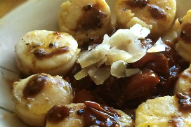
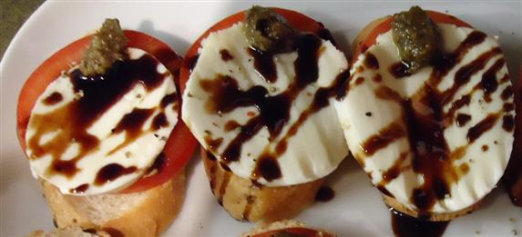
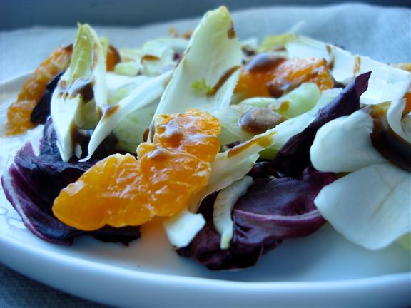
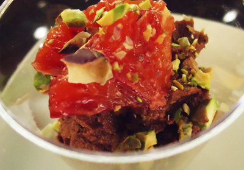
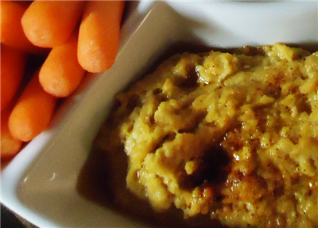
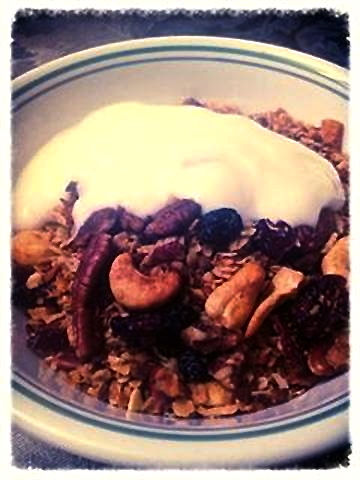
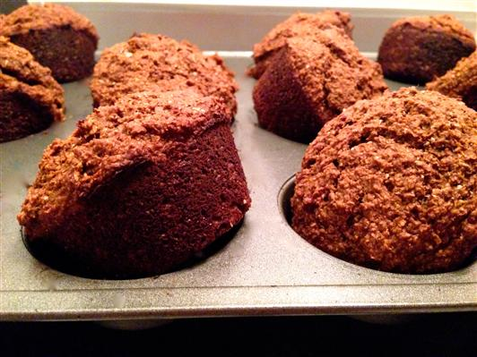
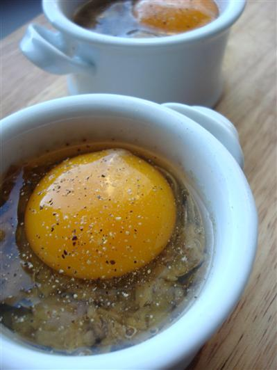
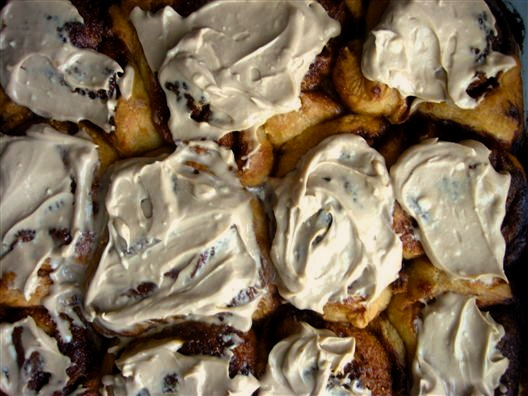

It’s our favourite time of year – tomato season! Like clockwork, we have been picking up a bunch or two every week, intended for sauce, sandwiches and salads. We say intended, because, well, you know how we feel about tomatoes.
To keep from eating the whole lot sliced and simply dressed with olive oil and salt (not that there’s anything wrong with that), we combed our favourite websites and blogs for some tomato inspiration. It turns out that exercising a little restraint results in a gleaming, ruby-red treasure trove of recipe ideas – the best use for delayed gratification we’ve found yet.

A tomato sandwich is ideal late-summer fare, and these recipes have convinced us that you can improve on perfection. Clockwise, from top left:
1. Roasted Tomatoes and Onions on Toast
2. Summer Tomato Tartines with Garlic Confit
3. Tomato Sandwich with Anchovy Aioli
4. Pan con tomate

Jams and sauces are a little more involved, but if you’re into canning, they have the added bonus of keeping you company through the winter. Clockwise, from top left:
1. Sweet Tomato Jam2. Tomato Sauce with Onion and Butter
3. Roasted Tomato Jam
4. Tomato Anchovy Sauce
Happy tomato season! (We’re thinking of printing out cards next year.)
This is the sixth part in a series. If you've missed them, click for parts 1, 2, 3, 4 and 5.

Our last staff meeting was the largest one yet, with us having two new stores under our belt this summer! Colin, as winner of the last round, was the judge, and the theme was “30 Minute Dishes”. It was an impressive showing all around, proving that great food doesn’t have to take all day to prepare!

Daniel made a Ruby Red Grapefruit pork fajita with cherry tomato, bell pepper and avocado, and a cinnamon, Oregano and goat’s cheese dressing

Darren made Baklouti-roasted chicken with a Cara Cara Orange Vanilla glaze, Baklouti-roasted root vegetables and peppers, and couscous with Baklouti and lime

Rachel W made a Greek chicken pasta salad with Sherry Reserva and Rosemary

Rebekka made a Black Cherry-ginger glazed pork chop with Harissa cabbage

Curtis made a Chipotle-Champagne cheese dip with sesame Melba toast and parsley

Rodney made a curried risotto with Lavender and Roasted Sesame chicken

EJ made a Basil-Honey Ginger green curry with shrimp, scallops and a scallion-basil steamed bun

Rachel P made a Blood Orange watermelon-feta salad with Blackberry Ginger glazed onions, arugula and mint

Azkaa made a Roasted Walnut and Espresso brownie
Everyone ooh-ed and aah-ed at each other's efforts while Colin deliberated, and Azkaa's sweet treat won out! Congratulations to Azkaa, and thank you for joining us for another round of Iron Chef: Evoolution Edition!

We had the latest instalment of Iron Chef: Evoolution a little while ago, and it was the sweetest one yet! The theme was "Gluten-Free Desserts", and everybody rose to the challenge admirably.

Darren made ginger scones with Blackberry-Ginger mole reduction

Colin made cinnamon buns with Red Apple-maple syrup reduction

EJ made Alfoos Mango-coconut cassava cake with coconut custard

Azkaa made Eureka Lemon almond muffins with lavender glaze and local florae (and home-ground flour!)

Curtis made Blood Orange chocolate truffles
This was the first challenge in which Rachel W, our judge and resident gluten-free'er, was able to taste all of the dishes. Everyone commenced getting a sugar high while she deliberated. Colin was crowned the winner, to much applause! He'll judge the next challenge in June...stay tuned for "30 Minute Meals"!
Cooking for that special someone this weekend?
Here are some menu ideas to ensure you have the perfect evening:

Pan-Seared Scallops with Warm Tomato Salsa


Fennel, Endive and Radicchio Salad with Orange Vinaigrette



The Ancient Egyptians, like all ancient peoples, greatly valued oil; but unlike their neighbours to the East and West, they did not profit from large-scale production of olive oil until around 330 BCE. It has been posited that the climate in Egypt at the time was not ideal for growing olive trees. More likely, though, is the idea that the trading of domestic goods for olive oil benefited the Egyptian elite; limited quantities ensured that the product became a true luxury, thereby elevating the status of those who could secure it. This powerful commodity was integral to the increased class distinction in the emerging state, and Palestine, Mesopotamia and the Mediterranean were all too eager to trade with Egypt to cement their ties.

Image found here
{kind=link}
Egypt was also famous throughout the ancient world for its essential oils and perfumes. Olive oil was considered an ideal carrier, but widespread oils like castor, linseed and safflower were used more commonly. Unlike in Ancient Greece and Rome, olive oil was not used in large quantities, such as for fuel, but rather saved for cosmetic purposes and food, for those who could afford it.

Image found here
Under Greek (and later, Roman) rule, olive cultivation dramatically increased in Egypt. As olive oil became available to a larger percentage of people, the Egyptians eventually came to adopt many of the ritual and everyday practices of the rest of the Greco-Roman world; in particular, they began offering olive oil to the gods, placing jugs of olive oil in the tombs of the deceased, and using it as a medicinal ingredient.
Although it made its way into the myths of the time -- the goddess Minerva is credited with creating the olive tree in Roman mythology, much like Athena in Greek mythology, and legend also states that brothers Romulus and Remus, the demi-gods that founded Rome, were born under an olive tree -- the olive tree in Ancient Rome was not initially as sanctified as it was in Ancient Greece. This changed rapidly, however, as the Greek Empire spread olive cultivation to its colonies.

Greek colonists introduced olive cultivation to Southern Italy around the 8th century BCE, but it was the Romans who revolutionized the process and made olive oil a valuable commodity on the international trade market. The Romans were the first to start crushing the olives in roller mills, which separated the pulp without bruising the pits. The resulting liquid was left to sit until it separated, and the high-quality oil was skimmed off the top; the remaining pulp was then pressed again to extract a lower-quality olive oil. After the second pressing, the pulp was put to use as fertilizer.
In the beginning, olive oil was not widely used for food; while whole olives were eaten during meals, olive oil was generally reserved for cosmetic and medical applications. Rancid oil, in particular, was used for lighting due to its lower water content. Of course, the famous Roman baths made liberal use of olive oil; those who could afford this luxury would have the oil massaged into their body and scraped off with a strigil before bathing.

As the Roman Empire expanded, so did olive oil production in its colonies, especially Spain and North Africa. Rome imposed taxes on these colonies in the form of olive oil, ensuring a steady supply for international trade purposes. Needless to say, thanks to innovative techniques and economic strategies, the Empire profited immensely from this ‘liquid gold’ until its ultimate decline and fall, of which the oil market was a casualty.
Here at Evoolution, we regard olive oil as more than just an ingredient in cooking, and we find ourselves using it more and more in our daily routines. Over the next couple of weeks, we’ll be drawing inspiration from the ancient world, looking at the practices surrounding oil in many great civilizations.

Image found here.
Where better to start than Ancient Greece?
It is said that the city of Athens was so-named because of an olive tree. According to this Ancient Greek mythology, the gods of Olympus set out to rename the city of Cecropia, originally named for its founder, Cecrops. Poseidon, god of the sea, and Athena, goddess of wisdom and courage, found themselves in great dispute, as both wanted to give their name to the city. To end the argument, Zeus decided that each of them would give the city a gift, and the city would decide who would become their patron. Poseidon, for his part, struck a rock with his trident, causing a spring of saltwater to gush forth. Athena planted a seed in the ground, from which grew an olive tree. King Cecrops and his citizens deemed the olive tree the superior gift, and the city was henceforth known as Athens.

This etiological myth is a testament to the significance of the olive tree in Ancient Greece. It is no wonder that the soon-to-be Athenians would find the olive tree to be so pleasing; it produced a number of useful things, from fruit to firewood (olive wood is surprisingly effective fuel for a fire, once it’s been started). Chief among these useful products was olive oil, which was immensely versatile; for example:
- Athletes would have olive oil massaged into their skin before physical activity to prevent injuries, and afterward to prevent soreness.
- It was used for exfoliation, being spread onto skin with sand or ash and scraped off with a strigil.
- In perfumes, olive oil was used as a carrier oil, much like alcohol is used today, being embellished with plant-based ingredients like flowers, leaves and seeds for fragrance.
- It was used as fuel for oil lamps
- Ulcers, burns and other wounds were treated with olive oil
- It was used for anointing newborn babies and the deceased, and was offered to the gods as a sacrifice
- Olive oil was so highly valued that it was even given as a prize to the winners at the Panathenaic Games in Athens.
Olive oil was, of course, used liberally in food; its health benefits were widely touted by early physicians such as Hippocrates, who recommended that grains, legumes and vegetables be served ‘well-oiled’. For fortification, it was also recommended to eat pieces of hot bread dipped in wine and olive oil; we’re not sure if we’ll be trying this anytime soon, but it does sound oddly heartening.
It can be hard to get excited about salad in winter – gone are the delicate lettuces of summer, the fleshy tomatoes that need nothing more than good olive oil and salt to come alive. The market fills instead with piles of squash, root vegetables and hearty greens, all of which need a bit of coaxing before gracing our plates.
But there is a certain charm to the humble vegetables of winter, to smoothing out their rough edges and finding out what makes them tick. While it is easy to heap praise upon the glistening turkeys and buttery side dishes of the season, we urge you to save salad from being an afterthought on your table. After our fair share of winters in Edmonton, we can say with all honesty that a winter salad, handled with care, might even beat out a plate of ripe tomatoes and sweet corn in July.

A good winter salad is complex, both aesthetically and texturally. It is essential in these cold, dark months to fill our plates with colour and crunch, so as to refresh both the eyes and the palate. A cold salad in winter is lovely, and a warm one just as welcome; indeed, a winter salad can be both at the same time – think roasted squash adorned with cool yogurt and pomegranate.
The flavour, too, tends to be more sophisticated than that of the simple salads of summer. A winter salad needs to be bold enough to hold its own against the other heavy hitters on the holiday table. We reach for bitter lettuces to contrast the richness of the season, garnishing them with pungent anchovies or olives for bracing bite. Balance, too, is key, so the tart juiciness of citrus, persimmon or pomegranate is desirable.
Here are a few ideas for wonderful winter salads. We’ll be eating a lot of these in the next few weeks, in between bites of leftover cookies.
- shredded raw beets and carrots with parsley, walnuts and Honey Ginger balsamic
- shaved fennel and pear with hazelnuts and Cinnamon Pear balsamic
- sliced orange and grapefruit with green olives and red onion
- roasted squash and kale with pomegranate seeds and Sherry Reserva vinegar
- shaved raw Brussels sprouts with pecans, apples and mustard vinaigrette
pictured above:
- Fennel, Endive and Radicchio Salad with Orange Vinaigrette
- baby kale with almonds, candied ginger and pomegranate seeds with Persian Lime oil and Pomegranate-Quince balsamic (made by Azkaa)
Like we said, we do enjoy a good party – but we still like to keep things simple if we’re hosting, if for no other reason than to spend more time with our guests! In our opinion, the most pleasant conversations occur before everyone is called to the table, when guests can unwind and take the edge off their hunger with a few small offerings. So why not make it last all evening? Especially around the holidays, there is something to be said for putting out an array of nibbles and letting everyone help themselves as they please.
Here are a few recipes to get you started; it’s delicious food, without the fuss (the one exception is dessert; if there was ever something worth fussing over…):



Sticky Date Pudding with Balsamic Toffee Sauce
There’s nothing we like more than a relaxed breakfast or brunch with friends – especially at this time of year, when fancy, formal parties abound (though we of course enjoy these as well). If you time it well enough, the sun will be rising as you apply the finishing touches to the meal, and you and your guests can gather around the table and usher in the daylight together.
We’ve compiled a few of our recipes to make a lovely spread for a morning meal - simply add some fresh juice and a balsamic fruit salad. Stop in to the store and pick up a few items for yourself while you’re buying your gifts, tell some friends to come ‘round and then clear your plans for the rest of the day, unless they involve chatting and/or napping. It’s the perfect antidote to the stresses of the season.



Blueberry Balsamic Jam with Rosemary

Baked Eggs with Balsamic-Braised Leeks

Walnut Cinnamon Buns with Lavender Frosting
- asparagus (1)
- berard olive wood (1)
- cheese (1)
- coconut (1)
- darkbalsamic (3)
- gifts (1)
- iron chef (3)
- lavender (2)
- lightbalsamic (2)
- oils-fused-infused-olive-oil (5)
- oils-gourmet-specialty-oil (2)
- oils-pure-extra-virgin-olive-oil (2)
- recipes (8)
- salts-gourmet-salt (1)
- tomatoes (1)
- vinegars-dark-balsamic-vinegar (7)
- vinegars-white-balsamic-vinegar (4)


A versatile favourite - pair with our strawberry balsamic for a mouth-watering summer dressing.
Learn More >
Site by Palmerlee Design